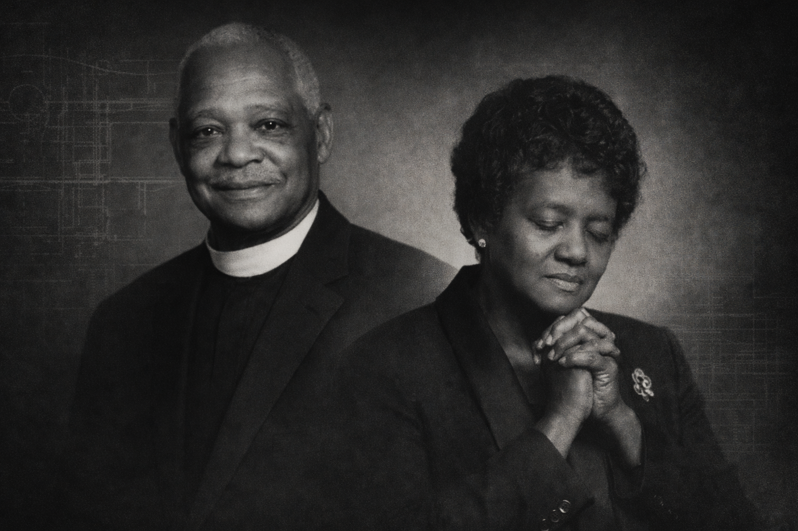
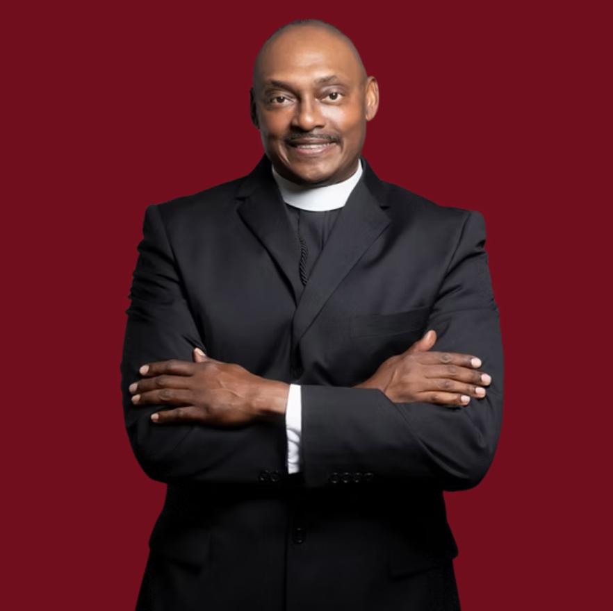

Six Decades of Faith. Revival. Community.
Greater Miracle Cathedral was established with a singular calling: to preach the Gospel with power and serve Vallejo with compassion. What began in humble beginnings grew into a spiritual lighthouse— a place where prayer fueled revival and faith built legacy.
Through seasons of growth, expansion, and renewal, the mission has remained unchanged: win the lost, make disciples, and love the city.

With unwavering faith and apostolic conviction, our founder established Greater Miracle Cathedral in 1962 as a beacon of revival and truth. Through prayer, sacrifice, and bold preaching, the foundation of this ministry was laid with spiritual strength and community devotion.
The legacy continues today because of that obedience.

Carrying the mantle of leadership into a new generation, our Superintendent leads with vision, integrity, and pastoral care. The mission remains clear: strengthen families, disciple believers, and keep revival alive in Vallejo.
Honoring the past. Advancing the future.
Vallejo is our mission. We are committed to strengthening families, discipling generations, and being present where hope is needed most.
Reaching our city with truth, grace, and bold faith.
Equipping believers to grow spiritually and live intentionally.
Meeting tangible needs while pointing people toward Christ.
Spiritual oversight rooted in prayer, integrity, and vision. Our leadership is committed to stewarding the legacy while preparing the next generation.
CONNECT WITH US